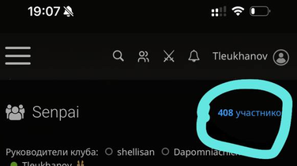
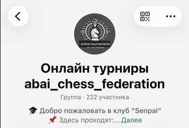
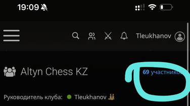
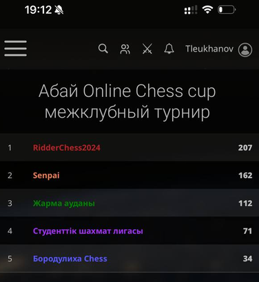
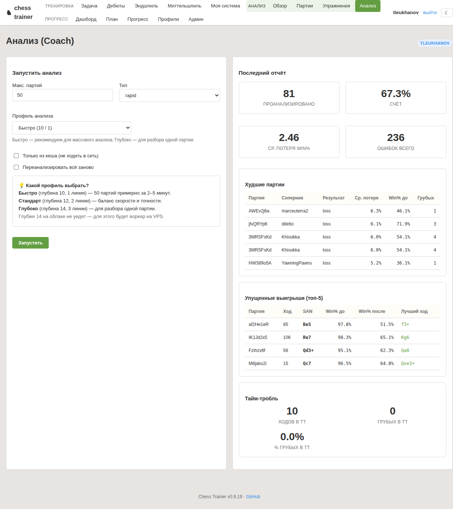
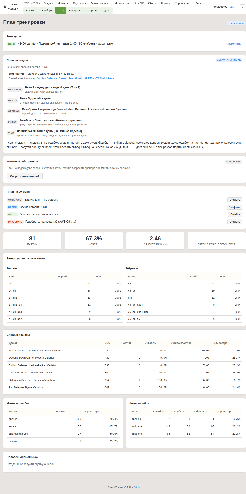
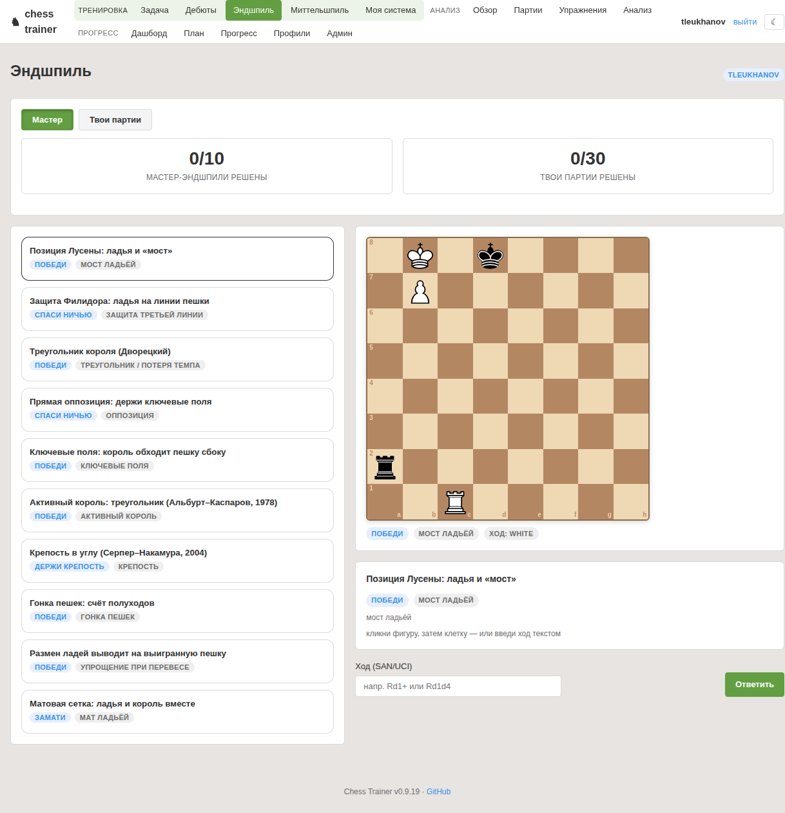
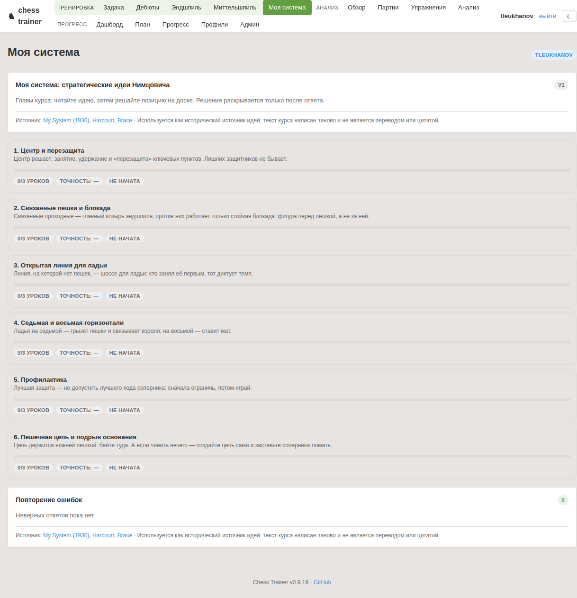

Советы слишком общие
«Считай варианты» не говорит, где именно ход стоил позиции и какой паттерн повторяется.
Закрытый MVP · 10–20 игроков
Chess Trainer берёт реальные партии игрока, объясняет конкретные ошибки и превращает их в план недели.
Проблема
«Считай варианты» не говорит, где именно ход стоил позиции и какой паттерн повторяется.
Партия разобрана, но на следующей неделе ошибка повторяется — потому что нет тренировочного действия.
Нужен быстрый цикл: увидел ошибку → понял причину → сделал 5 конкретных упражнений.
Chess Trainer не «оценивает позицию». Он отвечает: что именно ты делаешь не так и как это исправить.
Для кого
Игрок понимает правила и базовую теорию, но теряет фокус, время и план. Ему нужна обратная связь по его собственным играм.
Кто я
Игровой путь
Судейство и организация
Комьюнити
Группы пересекаются, поэтому не суммируем. В «Абай Online Chess Cup» Senpai набрал 162 и занял второе место после RidderChess2024 (207).




Скриншоты обрезаны до шапки/таблицы: личные сообщения участников скрыты. Статус турнирной работы — текущая практика Yeraly, не лицензированный рейтинг FIDE.
Что внутри
Подтягиваем партии с Lichess. Анализ строится на реальных играх, а не на абстрактных позициях.
Stockfish считает потерю win%, фаза игры, грубые ходы, конкретная альтернатива и лучший ход.
Повторяющиеся ошибки превращаются в фокус: дебют, миттельшпиль или эндшпиль, задачи и время.
Endgame trainer и Reading trainer закрепляют идею сразу после анализа, а не «где-нибудь потом».
Анализ

Числа — снимок текущего профиля, не обещание результата и не «average across market».
Статистика текущего профиля
Вывод системы: не «играй внимательнее», а «качаем эндшпиль: 5 дрелей в день + разбор 3 партий».
От анализа к тренировке



Чем мы отличаемся
Мы не говорим «аналогов вообще нет». Мы скорее закрываем конкретную нишу: после Lichess/Chess.com игрок часто остаётся один на один с анализом. Мы превращаем его в следующую тренировку.
Ключевой принцип
Система решает
Корректность хода, варианты, оценка позиции, допустимые ответы.
Система не решает
LLM не объявляет ход лучшим и не заменяет расчёт. Текст только объясняет проверенный результат.
Что уже есть
Закрытый пилот
Что нужно для запуска
data/data/Что просим
data/, HTTPSОдобрить закрытый пилот и VM для ограниченного web-MVP. После 2–3 недель — разбор результатов и решение о следующем этапе.
Вернуться к началу ↑